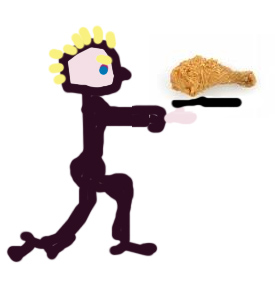

| HEN |
|
This, to me, looks like a dude facing right, down on one knee, holding out a fancy tray, on which is placed a FRAGMENT OF A HEN (usually the beak, sometimes just the giblets).
 |
| かた |
fragment
NUBI
★☆☆☆☆ |
| 片手 で or に XXX |
one-handed
★★☆☆☆
KUNKUN
to do xxx one-handed. |
| 片言 |
broken english / Japanese
★★☆☆☆
KUNKUNFP
we say "He speaks broken English".Japanese say, "He speaks katakoto nihongo." |
| 破片 | |
| 片仮名 |
katakana
★☆☆☆☆
katakana - the letterforms which are used to write foreign words and indicate emphasis. Oddly, the word "katakana" is written in Kanji. Kind of defeats the purpose? |
 KANJIDAMAGE
KANJIDAMAGE
 Number
1117
Number
1117